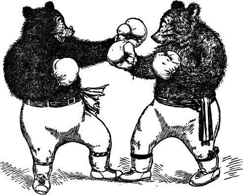
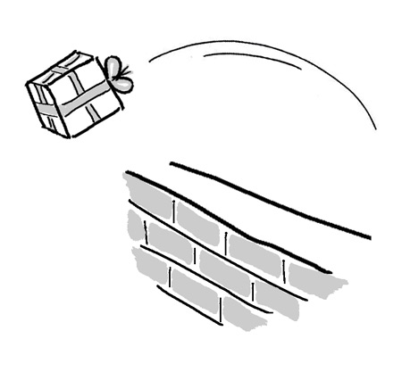
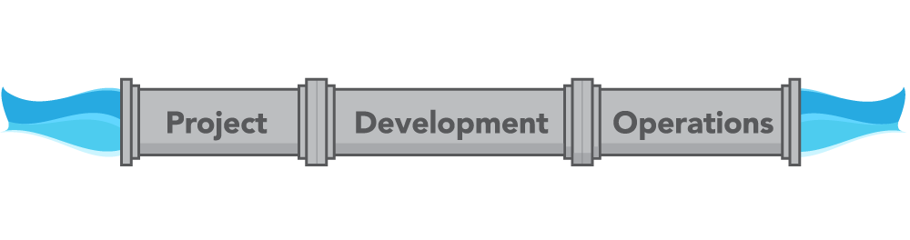

DevOps
Will Howard
What is this?
- High level overview
- Present problem and ideas
- Start the discussion
What is the problem?
- Development gets paid for change
- Operations gets paid for stability
- Different mindsets
- Different tools
- Shared business objectives
Deployments(Releases)
- Development tosses release over the wall to Operations
- Different environments 
The Need for DevOps
The Need for DevOps

What is DevOps?
- The handshake between Development and IT Operations
- Goal is to create fast and stable flow of planned work
The Three Ways
- Systems Thinking
- Holistic approach
- Amplify Feedback Loops
- Fast response to changing needs
- Culture of Continual Experimentation and Learning
- Take Risks
- Repetition is path to mastery
How does it help?
- Aids in release management
- Standardizes development/deployment environments
- Automation
- Communication
- Shorten Feedback Loop
Technology and Culture
- Unified Tools
- Unified Processes
- Automation
- Cooperation
Technology
- Deeply Modeled Systems
- Track all dependencies and systems
- Version Control System
- Consistent Deployment/Development versions
- Automation frameworks
- Chef
- Puppet
Culture
- How do you facilitate cooperation in your org?
- How do you measure performance?
- Measurement influences behavior
- Eliminate the silos!
Agile and DevOps
- Complimentary
- Agile is the bridge between business and development
- DevOps is the bridge between development and operations
- Together they form the entire business lifecycle
Transparency/Visibility
- Transparency facilitates communication
- More Transparency = Better Status
- Like deeply modeled systems
- Visibility is vital to project success!
- If you don’t know what resources are available, how do you know how much work you can do?
- How do you monitor resources?
Why do we care?
- Proactive vs Reactive
- Proactive is understanding the work that needs to be done
- Reactive is fighting fires which leads to unplanned work
- Without visibility into resources AND work, it’s impossible to be proactive
Unplanned Work
- Technical Debt
- Steals resources from planned work
- Resource sink
Getting Started
- Integrate deployment environments into development cycles
- Automating test tools
- Make Developers responsible for deploys
- Standardization!
- Make deployment User Stories
Starting the Conversation
- There is a need to unify process and tools across development and operations
- Organizations need a better way to measure resources, velocity and success
- DevOps is about cooperation and coordination
- We’re all on the same team
- DevOps isn’t just for huge teams, it’s about planning
Questions?
References/Resources
- http://dev2ops.org/2010/02/what-is-devops/
- http://itrevolution.com/pdf/Top11ThingsToKnowAbout DevOps.pdf
- http://venturebeat.com/2013/09/30/an-idiots-guide-to- devops/
- http://www.jedi.be/blog/2010/02/12/what-is-this- devops-thing-anyway/
Thanks!
/